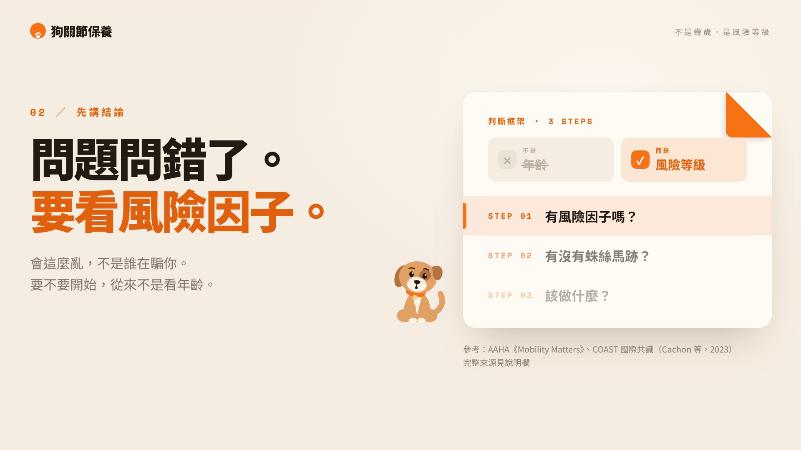

狗關節保養
不是幾歲．是風險等級

關節的基礎，常在幼犬期就埋下。
COAST 國際共識：四個階段，看的是風險。
七歲、五歲，不是起跑槍。
SOURCE ／ AAHA《Mobility Matters》
SOURCE ／ COAST 國際共識（Cachon 等，2023）
示意圖 ・ 狗的一生
幼犬
青壯年
中年
老年
基礎可能在這裡埋下
只是玩過頭？
扭到而已？
示意圖 ・ COAST 分期概念
從年輕成犬健檢起就追蹤
看生日
示意圖 ・ 年齡不是起點
5
7
某個體型平均比較容易出現風險的年紀
不是起跑槍
我的狗，有風險因子嗎？
你家狗符合幾項？
一項都沒有
一項以上
GROUP A ・ 0 項
基礎預防組
✓不需要額外保健品
✓把資源放在飲食與運動管理
GROUP B ・ ≥ 1 項
加強留意組
!就算現在完全沒跛，
✓也建議提早、更頻繁地健檢追蹤